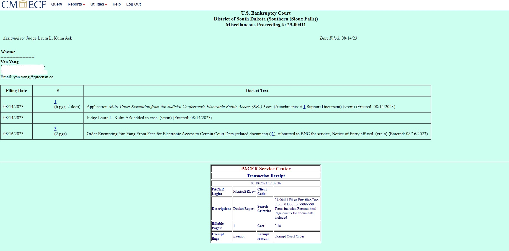
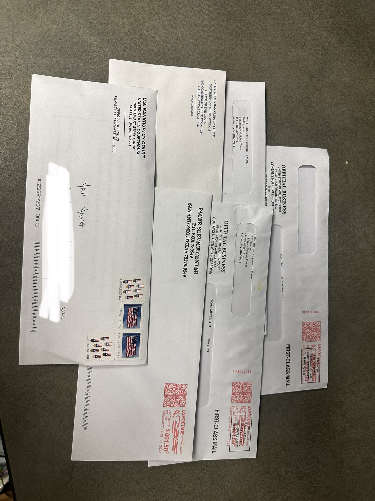

I got the first court order in my life from a bankruptcy court but I did not broke :)

One law clerk called me and offered me one year free access to documents at that court today. How nice, thank you sir!
It is hard to imagine that legal professionals still prefer physical paper letters.

Remeber to be as specific as possible in articulating your research idea, hypotheses, contribution, and most importantly, your specific data requirement. My request got rejected at first, and I modified my application and tried again. It took me two weeks to get approved by the central office. Then, each bankruptcy court makes an independent ruling on your request only as to its court's records. A court can grant or deny your request.